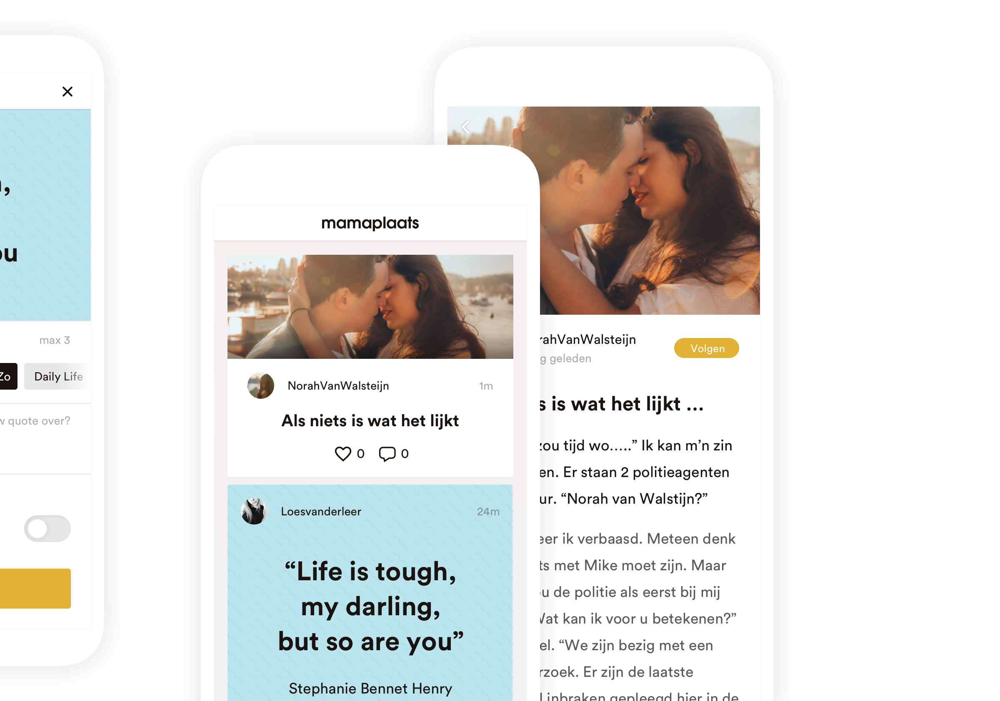
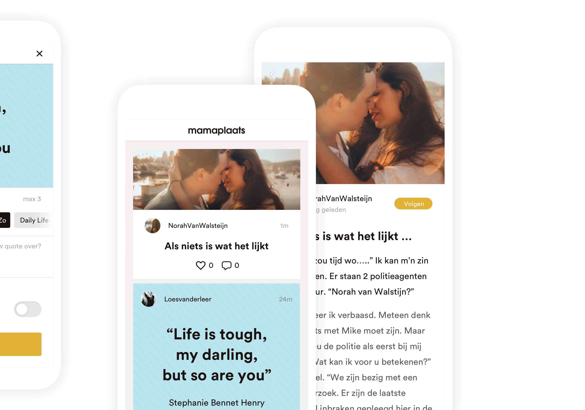

We helped EkhartYoga with their digital strategy while improving their platform with a new design, functionalities and an overall better user experience.
I was responsible for the entire user experience and visual design phase building this platform during my time at Frismedia. It was a great experience working with the cool people at EkhartYoga, learned a lot about yoga too.


 
